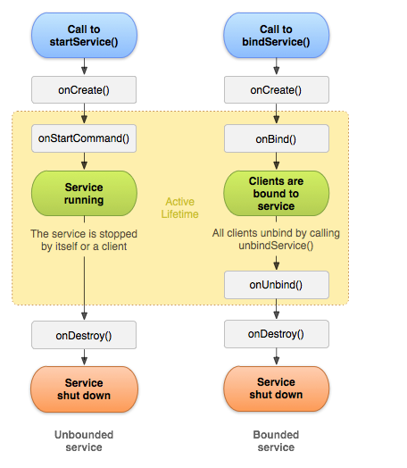

Android Service的简单应用
Service
先自己写个类继承service
public class TestService extends Service{
@Override
public IBinder onBind(Intent intent) {
// TODO Auto-generated method stub
return null;
}
}
service的onBind方法必须重写，如果我们不需要绑定Activity就return null.
别忘了在AndroidManifest.xml中添加
service的生命周期

每一次组件通过startService(Intent)方法启动service时都会调用onStartCommand(Intent,int,int)两个整型参数，一个是标识符，一个是启动ID。
标志股用来区分是一次重新发送，还是一次从没成功过的发送。每次调用调用onStartCommand(Intent,int,int)方法，启动ID都会不同。因此，启动ID
也可以用来区别不同的命令。
@Override
public int onStartCommand(Intent intent, int flags, int startId) {
// TODO Auto-generated method stub
return super.onStartCommand(intent, flags, startId);
}
non-sticky服务
IntentService是一种non-sticky服务。non-sticky服务在服务自己认为已经完成任务时停止。为了获得non-sticky服务，应该返回START_NOT_STICKY或START_RELATIVE_INTENT。
通过调用stopSelf（）或者stopSelf（int）方法，stopSelf（）是一个无条件方法。不管onStartCommand(Intent,int,int)调用多少次，该方法总是能成功停止服务。stopSelf（int）该方法需要来自onStartCommand(Intent,int,int)方法的启动ID。只有在接收到最新的启动ID后，该方法才会停止服务。
如果系统需要在服务完成任务前关闭它，START_NOT_STICKY型的服务会关闭，START_RELATIVE_INTENT型的则会在可用资源不吃紧的时候，尝试再次启动服务。
sticky服务
sticky服务会持续运行，直到外部组件调用·Context.stopService(Intent)·让它停止为止。为启动sticky服务，应返回START_STICKY。
service的绑定
在需要绑定的Activity或者fragment中添加这样的代码：
private ServiceConnection mConn = new ServiceConnection() {
@Override
public void onServiceDisconnected(ComponentName name) {
// TODO Auto-generated method stub
}
@Override
public void onServiceConnected(ComponentName name, IBinder service) {
mbinder = (MyBinder) service;
}
};
private MyBinder mbinder = null;
@Override
protected void onCreate(Bundle savedInstanceState) {
super.onCreate(savedInstanceState);
setContentView(R.layout.activity_main);
Intent i = new Intent(this, TestService.class);
this.startService(i);
}
@Override
protected void onDestroy() {
super.onDestroy();
getApplicationContext().unbindService(mConn);
}
fragment中注意getActivity的获取
ServiceConnection是代表服务绑定的一个对象，并负责接收全部绑定回调的方法。
同时在之前的service中添加：
public class MyBinder extends Binder{
public TestService getService(){
return TestService.this;
}
}
@Override
public IBinder onBind(Intent intent) {
return new MyBinder();
}
这里我们写了getService用于获取当前service的对象，这样我们可以在Activity中通过binder.getService()获取service对象，进而调用service中的public方法。
绑定服务可能出现的问题
1.提示不能强制转换，IBinder接口不能转换为Binder类型。
这个问题据说根据堆栈信息的提示就是这个，直接去找也是找到mbinder = (MyBinder) service;这一行，目前我看到两种解决方案：
1、AndroidManifest.xml中标签的过滤器不能是包含包名字符串的，具体原因未知。
此方法未验证
2、绑定的Activity不是在AndroidManifest.xml中的main启动
由于自身项目需求没有进行尝试，但是从自己写的例子来看，似乎有这种可能